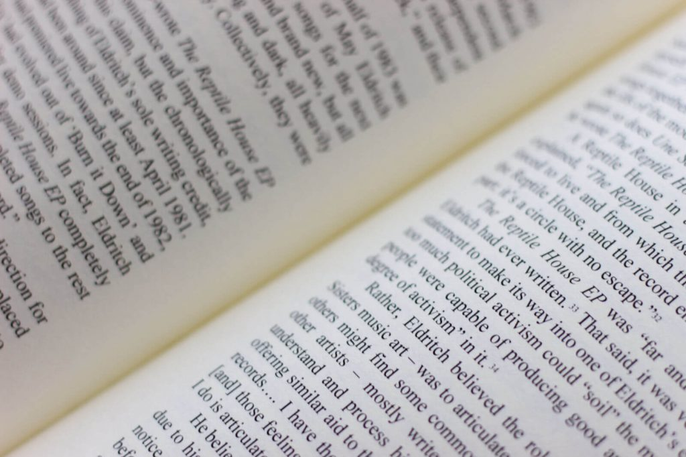
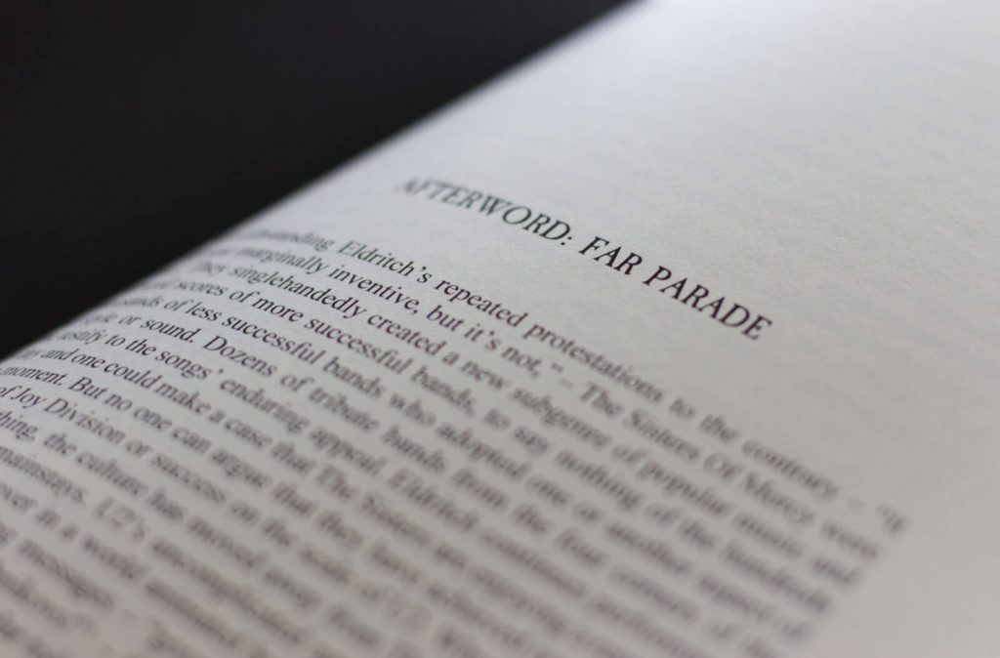

The story of the Sisters is always a personal one. I vividly remember connecting with some German-speaking followers on the famous „Dominion Mailing List“ in the late 90’s, getting my first live recordings in the process, feeding my hunger to see the band live on stage. It ended up seeing many countries and meeting lots of wonderful people. The Sisters were never reduced to the music. The wonderfully painted lyrics and the friendly community played a great part, at least for me.
For a million empty faces
From this point of view, it’s no surprise that Trevor Ristow opens „Waiting For Another War“ with his experience at the Kabuki in San Francisco in 1985. Throughout his book, personal journeys cross the Sisters‘ path frequently, and they matter. In this context, „war“ translates into how travel plans are made when the Sisters happen to play in a venue near you. There’s the story of the early Sisterhood or God Squad, following a still young band across England and mainland — which in some cases lead into fleshly connections with members of the band. To this day, people follow the Sisters around the globe. I’ve met the author on one of these opportunities, back in Leeds in 2003 when the Sisters displayed their Smoke And Mirrors in two nights at the Blank Canvas. It felt like people from all around are gathering to celebrate. In a combination of smoke, lights and beat, I felt free.

Burn me a fire in the reptile house
I believe it is the tension between simplicity and complexity in the works of the Sisters that appeals to many people. The monotonous, repeated beat of the Doktor clash to the multi-leveled lyrics of Andrew Eldritch. The Sisters were Zeitgeist, emerging from the debris of punk where anyone can do anything as long as he (or she) is dedicated to it… Do instead of talk. The Sisters did, and they added their own voice to it. Meddling T. S. Elliot with a drum machine is unusual to say the least, and with that you add a unique visual presence and grotesque cover songs that underline the punch line to the joke the early iteration of the band is intended to make. The Sisters just did, and they burned a lot of people in the process.
Paint my name in black and gold

Trevor ably managed to combine press cuttings, interviews and eye-witness reports into an amazing telling of a young band getting their voice heard. In a stark contrast, he closes with the Sisters believed dead at the end of 1985 before concluding in a Far Parade that still unloads the vintage rock into our concert halls and festival venues. That famous gig at the Royal Albert Hall, as well as the Black Planet video shoot, definitely marks the end of an era that was conceived with Andrew Eldritch and Gary Marx and then put into hiatus with Craig Adams and Wayne Hussey — all of them defining the early Sisters. You definitely want to read the insight giving but colourful „Salad Daze“ by Wayne Hussey, the numerous, the excellent entries of „I was a teenage Sisters Of Mercy fan“ and the great articles on The Quietus to get the complete picture. Trevor has done excellent ground work with his book. For now, the eyes are on Mark Andrews to finish „Paint my name in black and gold“.
Show me.
Recommended:
- About the book: https://www.gkwfilmworks.com/sisters-updates
- About Alice: https://thequietus.com/articles/21215-sisters-of-mercy-leeds-andrew-eldritch-interview
- I was a teenage Sisters Of Mercy fan: http://sistersfan.blogspot.com
- Salad Daze: http://www.themissionuk.com/wp/wayne-hussey-salad-daze/